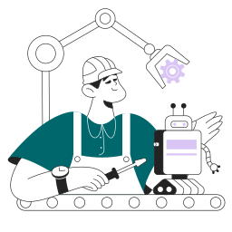

As an electronic engineering intern, I have gained valuable experience in industrial automation while working with a variety of high-profile clients. Recently, I was part of a team that successfully completed a plant optimization project for Mimosa Mining Company.
about me
Industrial Automation?
Industrial automation is the application of technology to control and monitor industrial processes, reducing the need for human intervention. These technologies can include robotics, sensing and control devices, and computer systems.
The goal of industrial automation is to improve efficiency, productivity, quality, and control of manufacturing processes while reducing costs. This technology has transformed manufacturing and production processes across a wide range of industries, including automotive, mining, oil and gas, and food and beverage. With continued advancements in technology, industrial automation is expected to play an even more critical role in shaping the future of manufacturing.

Bio
As an electronic engineering intern, I have gained invaluable experience in the field of industrial automation while working on various projects. The biggest project I was involved in was the plant optimization project for Mimosa Mining Company, which took place from February 13 to March 24, 2023. My contributions in this project included developing customized solutions that improved efficiency and safety at the plant, resulting in significant cost savings for the client.
In addition to the Mimosa project, I was also involved in commissioning an Allen Bradley PowerFlex 753 drive and hoist maintenance at a gold mine. These experiences have given me a thorough understanding of industrial automation and how it can be applied to different contexts.
To further improve myself, I have completed several online courses, including the Electricity Distribution course offered by the National University of Singapore on edX. I have also completed courses on industrial power distribution and SI low voltage drives from Rockwell Automation University.
My interest in clean renewable energy was kindled by an article titled "Powering Africa's sustainable development through wind" by Linda Munyengeterwa and Sean Whittaker on World Bank Blogs back in 2021. Other articles I found interesting include Small wind turbines: Driving performance by the Renewable Energy World content team, and Solar Energy by National Geographic Education.
My interests in clean energy solutions, automation, Arduino, Raspberry Pi, smart electricity grids, and motor drives have driven me to continually educate myself on these topics and keep up with the latest advancements in the field. I am dedicated to using my skills and knowledge to contribute towards building a more sustainable future.
With my background in electronic engineering, knowledge in industrial automation, and passion for clean energy solutions, I am eager to take on new challenges and opportunities. I am confident that my skills, combined with the experiences I have gained so far, will make a significant contribution to any team and project I become part of.
fun facts
- ⚽ I'm a die-hard Spurs fan. #COYS
- 🧙♂️ I believe Professor Severus Snape is the most underrated hero.
- 🏏 I watch a lot of cricket
- ⛳ I also enjoy playing golf.
- 🎬 i'm a huge fan of The Bing Bang Theory
- 🕹 EA Sports FIFA is the only video game I know
- 🎧 I stan Eminem